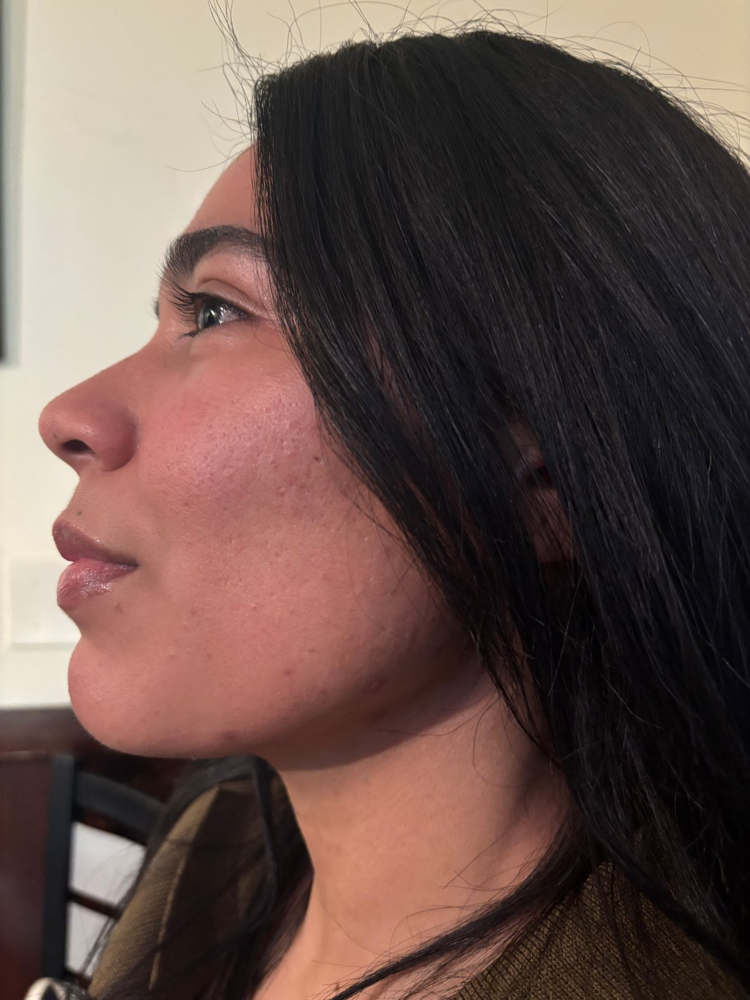
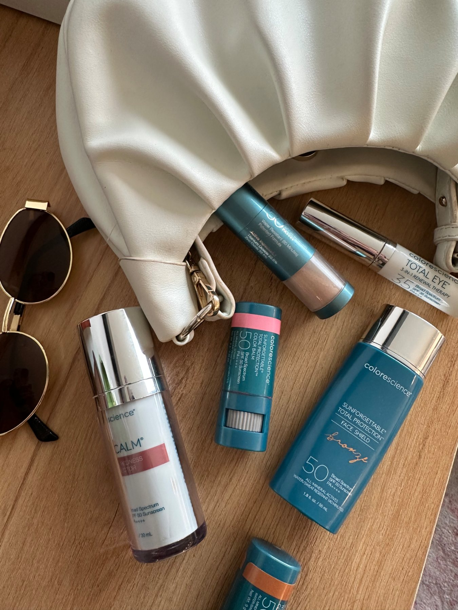

Meet Isabelle
Meet Isabelle Joseph, DNP, NP-BC
Expert Care Starts With Truly Knowing Your Patient
For Isabelle Joseph, DNP, NP-BC, great care is about more than choosing a treatment. It starts with listening, understanding what matters to you, and creating a plan that fits your goals, your lifestyle, and your comfort level.
With more than 15 years of clinical experience, Isabelle brings advanced medical knowledge together with a warm, personalized approach to aesthetics, wellness, and skin health.
Her goal isn't to change who you are. It's to help you feel informed, supported, and confident in the choices you make for yourself.

Experience You Can Trust. Care That Feels Personal.
Isabelle's clinical background and doctoral education have shaped the way she approaches every patient interaction: thoughtfully, individually, and with an emphasis on education. She believes patients deserve to understand their options—not simply be told what they need.
Whether you're considering Tox for the first time, navigating changes in your skin or hair, exploring support for weight or hormonal changes, or simply trying to build a better skincare routine, Isabelle takes the time to understand the bigger picture.
Together, you'll talk about your concerns, your goals, and the options available to you so you can make informed decisions about your care.

A Thoughtful Approach to Aesthetics
You Should Still Look Like You.
Aesthetic care doesn't have to be about dramatic change. Isabelle's approach centers on thoughtful recommendations and results designed to help you feel refreshed and confident while still feeling like yourself.
Every patient is different. Your facial anatomy, skin, goals, lifestyle, and preferences all matter when determining whether a treatment is appropriate for you.
That's why Isabelle begins with the individual—not the procedure.

Looking Beyond the Surface
Wellness That Connects the Pieces
Isabelle's interest in wellness extends beyond aesthetics. She believes feeling your best can involve many interconnected pieces—from skin health and hormonal changes to weight, hair health, movement, nutrition, and overall well-being.
That perspective has shaped a more comprehensive approach to care and allows Isabelle to support patients through services spanning aesthetics, wellness, and skin health.
It's not about chasing perfection. It's about having knowledgeable support as you decide what feeling your best looks like for you.

Skincare Without the Guesswork
Isabelle has a particular passion for medical-grade skincare and helping patients understand what their skin actually needs. With countless products, ingredients, routines, and trends available, skincare can quickly become overwhelming. Isabelle helps simplify it.
Through personalized skincare consultations, medical-grade products, and prescription skincare options when appropriate, she helps patients create realistic routines based on their individual skin concerns and goals.
The goal isn't more products. It's the right products.

Care That Comes to You
A More Convenient, Personal Way to Receive Care
Isabelle provides care through a concierge model, meeting patients where they're comfortable. Appointments may take place in your home, office, or another convenient location, allowing you to receive personalized care without the traditional waiting-room experience.
For Isabelle, concierge care isn't simply about convenience. It's an opportunity to create a more relaxed, personal experience where there's room for questions, conversation, education, and individualized attention.
Isabelle is based in South Easton, Massachusetts and serves South Easton and select surrounding communities, including Norwell, Randolph, Somerset, Stoughton, and Westwood.
Education + Clinical Experience
Knowledge Matters When You're Choosing a Provider
Isabelle brings more than 15 years of clinical experience to her work and has pursued advanced education through the University of Pennsylvania and Regis College.
Her clinical experience, continued education, and commitment to evidence-informed care allow her to approach aesthetics and wellness from a medical perspective while keeping each patient's individual goals at the center of the conversation.
Beyond the Credentials
Meet the Person Behind the Provider
Isabelle believes wellness should fit into real life—and she tries to live that philosophy herself. She has led a fitness accountability group for women and understands firsthand the value of encouragement, consistency, and having a community supporting your goals.
Outside of her professional life, Isabelle loves exploring new destinations, enjoying great food, decorating her home, spending time at the beach, and making memories with the people she loves.
Those experiences are part of what makes her approach to patient care so personal. She understands that everyone sitting across from her has a life beyond an appointment—and that the best care should complement that life rather than take it over.
How Isabelle Can Help
Aesthetics. Wellness. Skin Health.
Your Care Should Feel Like Your Care.
You don't need to arrive knowing exactly which treatment, product, or service you need. You just need a place to start.
Isabelle will listen to what's concerning you, help you understand the options available, and work with you to determine an approach that makes sense for your individual goals. Ready to meet Isabelle?